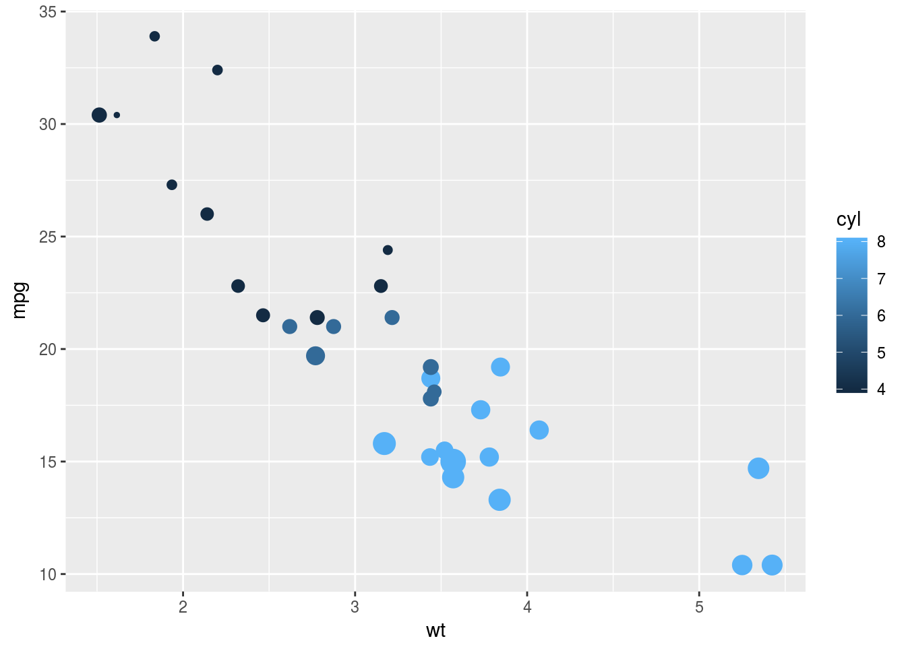
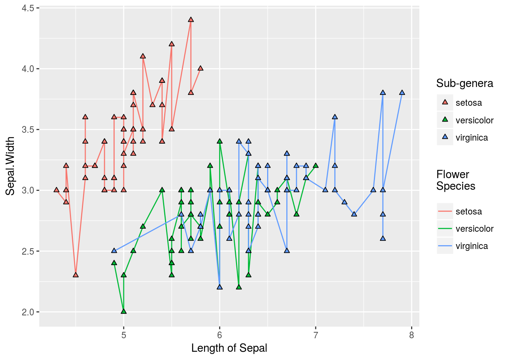

You know how to make ggplot2 graphics, right? No worries. Piece of cake.
Now, can you please rotate the x axis labels to vertical?


ggeasy is here to make that a little easier.
Installation
You can install ggeasy from github with:
# install.packages("devtools")
devtools::install_github("jonocarroll/ggeasy")Examples
library(ggplot2)
library(ggeasy)
ggplot(mtcars, aes(hp, mpg)) +
geom_point() +
easy_rotate_x_labels()
ggplot(mtcars, aes(wt, mpg, colour = cyl, size = hp)) +
geom_point() +
easy_remove_legend(size)
iris_labs <- iris
labelled::var_label(iris_labs$Species) <- "Flower\nSpecies"
labelled::var_label(iris_labs$Sepal.Length) <- "Length of Sepal"
iris_labs_2 <- iris_labs
labelled::var_label(iris_labs_2$Species) <- "Sub-genera"
ggplot(iris_labs, aes(x = Sepal.Length, y = Sepal.Width)) +
geom_line(aes(colour = Species)) +
geom_point(data = iris_labs_2, aes(fill = Species), shape = 24) +
easy_labs()